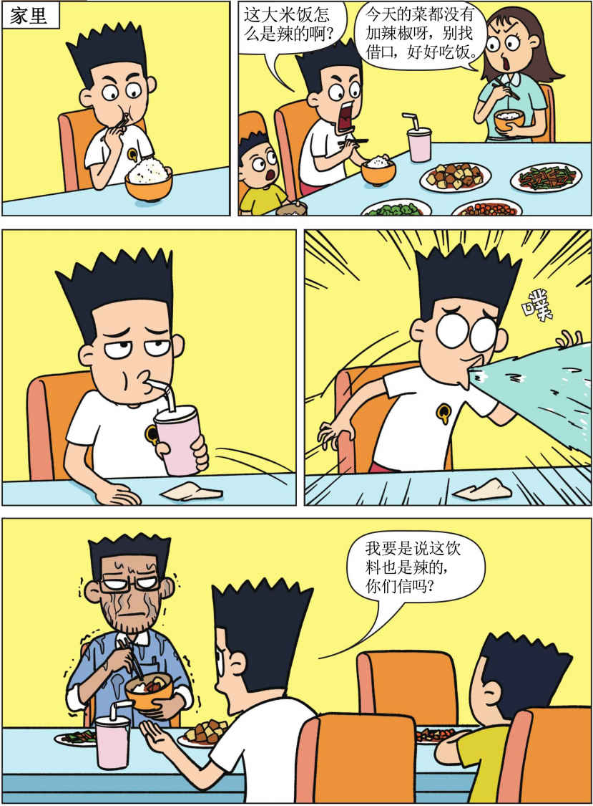
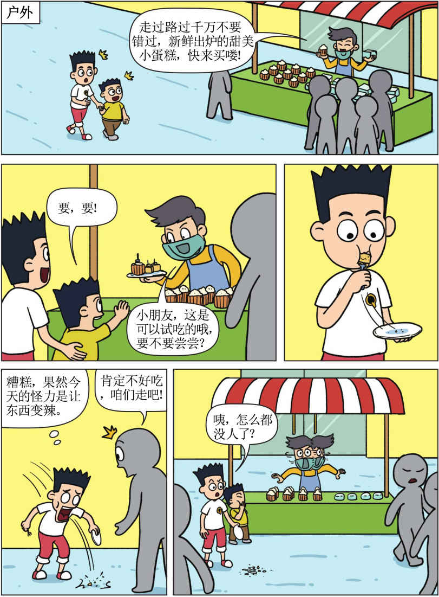
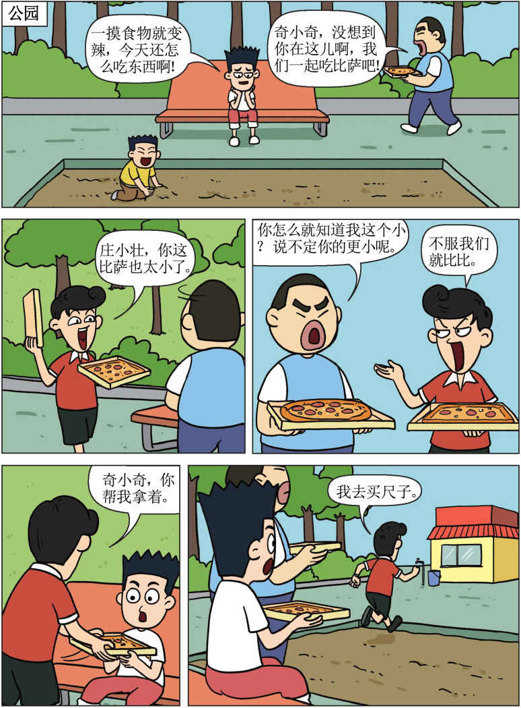
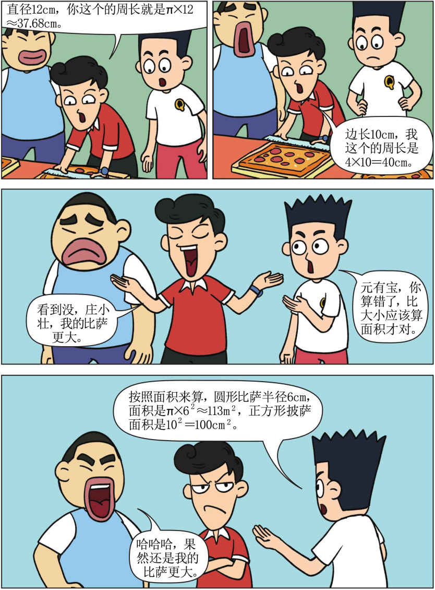
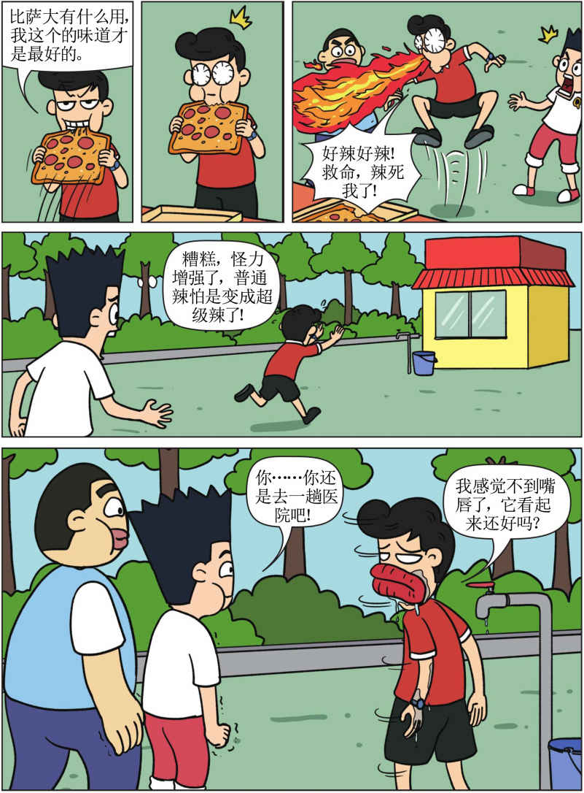
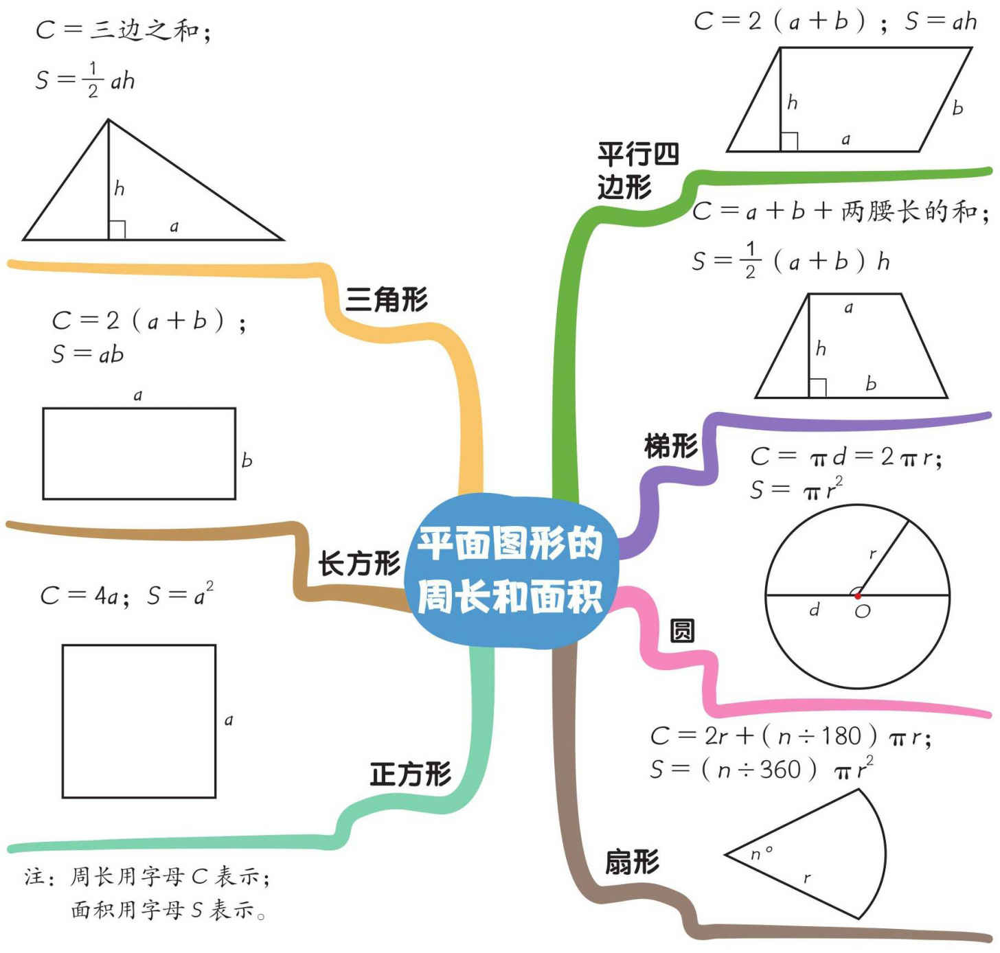

平面图形的周长和面积

数学练一练
答案扇在形第13页，一定要先做完，再看答案哦！
已知一根铁丝可以围成一个长5厘米、宽3厘米的长方形，如果把这根铁丝围成一个最大的正方形，这个正方形的面积是多少？
答案：15个。从漫画中，我们已经知道，不加BF这条直线时，可以数出6个三角形，加上这条线后，除了ABF、ABE两层各6个三角形，BEF之间还可以数出另外3个三角形，6＋6＋3=15（个）。
第25页的答案在这里哦！